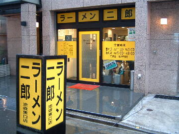
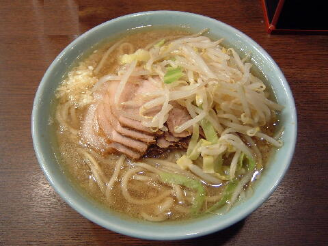
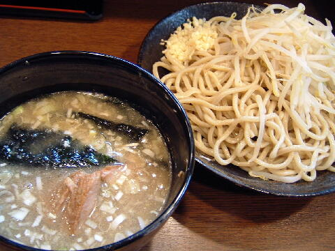

豊島区 南池袋 2-27-17
月
月が祝の場合は翌日が休み
11：00〜23：00

ラーメン 700円、ブタ入り 800円、ブタW 900円
大ラーメン 800円、大ブタ入り 900円、大ブタW 1000円
つけめん 800円、大つけめん 900円
味玉子 100円、生とじ玉子 100円
追加券 100円
店員は、バイト数名。
白コショウ、トウガラシ、しょうゆダレ。
レンゲ有。ティッシュ無。名刺有。
BGMは、無。
トッピングは、本店と同じだがアブラは味付け。
ラーメン二郎 池袋 池袋東口店の公式HP
「ラーメン二郎 池袋東口」でヤフー検索
「ラーメン二郎 池袋東口」でヤフーリアルタイム検索
「ラーメン二郎 池袋東口」でグーグル検索

ぶた入りラーメン ニンニク
麺は、ストレートで丸い極太麺。
ぶたは、小ぶりで薄いが柔らかくて美味しい。
スープは、豚骨感のある辛めのスープ。
ヤサイは、モヤシ9：キャベツ1の割合でシャキ。
ニンニクは、刻まれた生ニンニク。

つけめん ニンニク
トッピングはラーメンと同じ。
タレの丼には、ぶた、ノリ、メンマ、刻みネギが少々。甘くて程好い酸味があるタイプ。
麺の丼には、麺と野菜。ニンニクはこっち。冷水で絞められた麺はシコシコ。
つけめんは夏季限定。
ＰＣ店